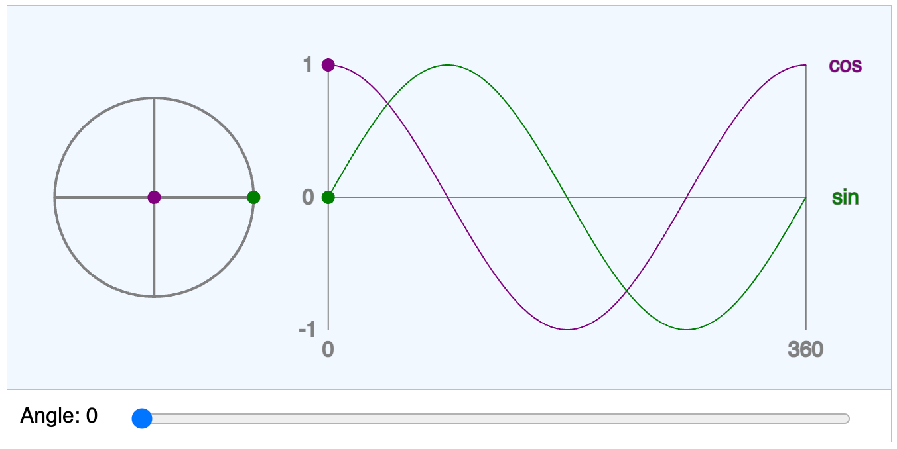

MicroSims for Geometry
Interactive simulations to explore geometric concepts through hands-on manipulation and visual feedback.
-

Explore different angle pair relationships including vertical angles, linear pairs, corresponding angles, and alternate angles formed by parallel lines and transversals.
-

Discover angle classifications by manipulating a slider to create acute, right, obtuse, straight, and reflex angles with real-time visual feedback.
-
Area Formulas for Quadrilaterals

Compare area formulas for different quadrilaterals including squares, rectangles, parallelograms, rhombuses, and trapezoids.
-

Explore the Barnsley fern fractal created using an Iterated Function System. Adjust iterations, scale, leaf angle, and curl to create different fern variations.
-

Explore the Cesaro curve (torn square) fractal. Starting from a divided square, watch how perpendicular displacement creates intricate lace-like patterns.
-

Calculate and visualize circle area by adjusting the radius. See how the area formula A = πr² produces the result in real-time.
-

Investigate the relationship between a circle's radius and its area through interactive manipulation and visual demonstration.
-

Understand the concepts of collinear points (on the same line) and coplanar points (on the same plane) through interactive 3D visualization.
-
Complementary and Supplementary Angles

Explore angle relationships: complementary angles (sum to 90°) and supplementary angles (sum to 180°) with interactive sliders.
-

Visualize the cosine function on the unit circle. See how the x-coordinate of a point on the circle relates to the cosine of the angle.
-

Convert between degree and radian angle measurements. Understand the relationship between these two common ways to measure angles.
-

Calculate the distance between two points on a coordinate plane using the distance formula derived from the Pythagorean theorem.
-

Explore the geometry course learning graph showing 200 concepts and their dependencies. Navigate through foundational concepts to advanced topics.
-

Explore the Koch curve fractal. Watch how a simple line transforms into an increasingly complex pattern through recursive subdivision.
-

Create the classic Koch snowflake by applying the Koch curve to each side of a triangle. Adjust recursion depth to see the fractal evolve.
-

Explore the Levy C curve (flowsnake), a space-filling fractal that uses 45-degree angles and eventually fills a 2D region.
-

Visualize relationships between lines in 3D space including parallel, intersecting, perpendicular, and skew lines.
-

Adjust line parameters to make two lines parallel. Understand what conditions must be met for lines to never intersect.
-

Explore the Gosper curve (flowsnake), a space-filling fractal based on hexagonal geometry using L-system rules and turtle graphics.
-

Investigate the relationship between points and lines. Explore concepts like distance from a point to a line and point position relative to lines.
-

Understand the fundamental building blocks of geometry: points (0D), lines (1D), and planes (2D) through interactive 3D visualization.
-

Explore the Pythagorean theorem (a² + b² = c²) visually. See how squares on the sides of a right triangle relate to each other.
-

Investigate regular polygons from triangles to dodecagons. Explore interior angles, exterior angles, and the relationship between sides and angles.
-

Test your knowledge of regular polygons with an interactive quiz covering sides, interior angles, and exterior angles.
-

Explore the Sierpinski carpet, a 2D fractal created by recursively removing the center of a 3×3 grid, leaving 8 squares each time.
-

Create the Sierpinski triangle fractal by recursively removing the center triangle from each remaining triangle.
-

Visualize sine and cosine on the unit circle. See how a point's coordinates relate to trigonometric functions as it moves around the circle.
-

Explore the geometry of a soccer ball (truncated icosahedron) made of pentagons and hexagons using 3D WebGL visualization.
-

Investigate triangle area using the formula A = ½bh. Manipulate the base and height to see how the area changes.
Using MicroSims in the Classroom
MicroSims (micro-simulations) are interactive visualizations that help students explore geometric concepts through hands-on manipulation and immediate visual feedback.
Learning Objectives
By using MicroSims, students will be able to:
- Visualize abstract geometric concepts through interactive manipulation
- Discover geometric relationships through exploration and experimentation
- Connect formal definitions to visual representations
- Develop intuition about geometric properties and relationships
Instructional Strategies
- Guided Exploration: Demonstrate the MicroSim and guide initial exploration with questions
- Discovery Learning: Allow students to discover relationships independently
- Concept Reinforcement: Connect exploration to formal definitions and theorems
Best Practices
- Allow time for free exploration before structured tasks
- Encourage students to make and test predictions
- Use MicroSims to supplement, not replace, traditional instruction
- Connect virtual manipulations to real-world applications